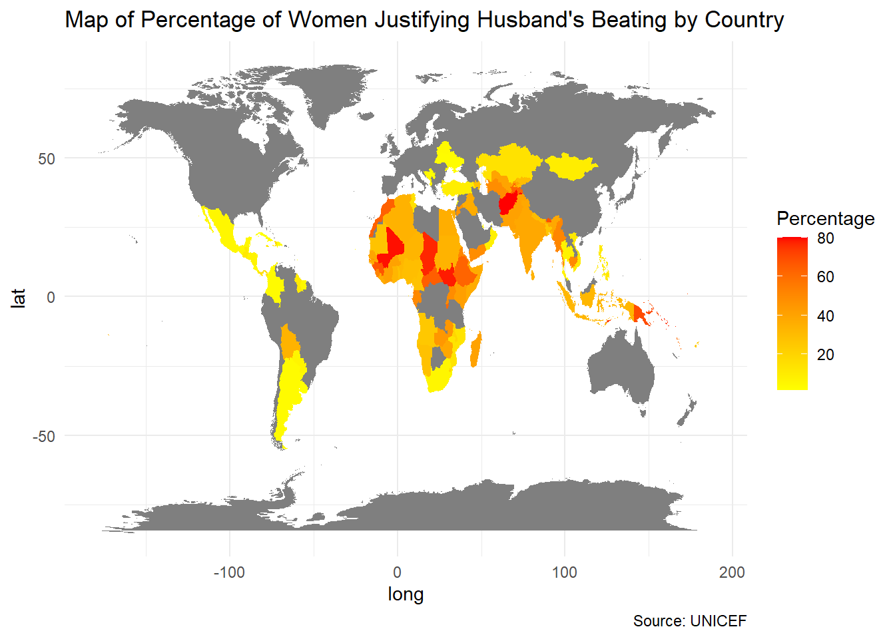
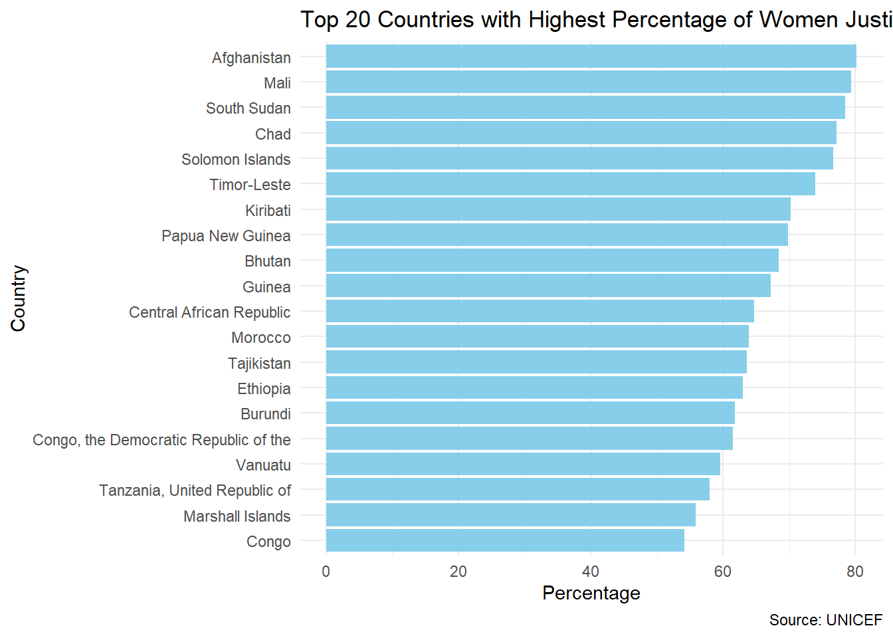
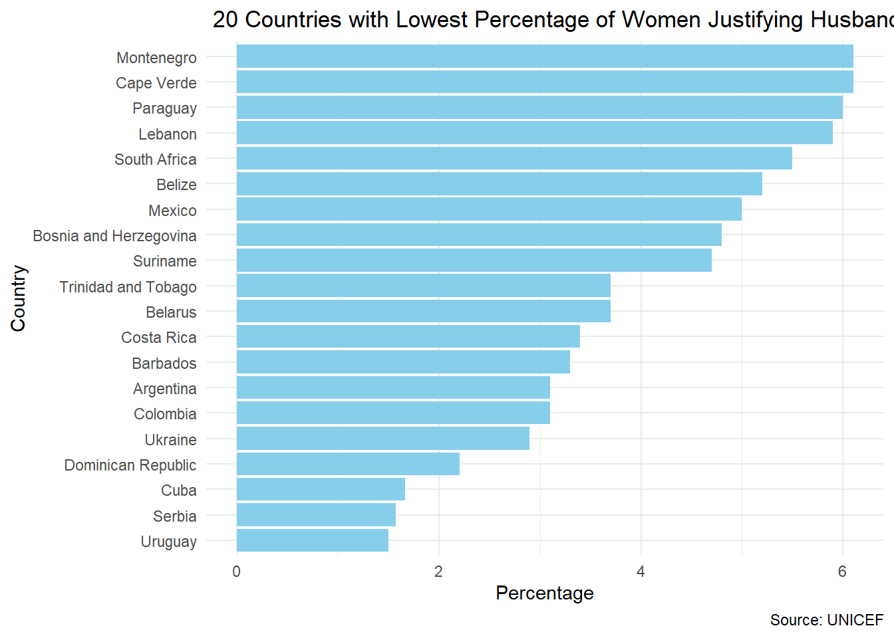
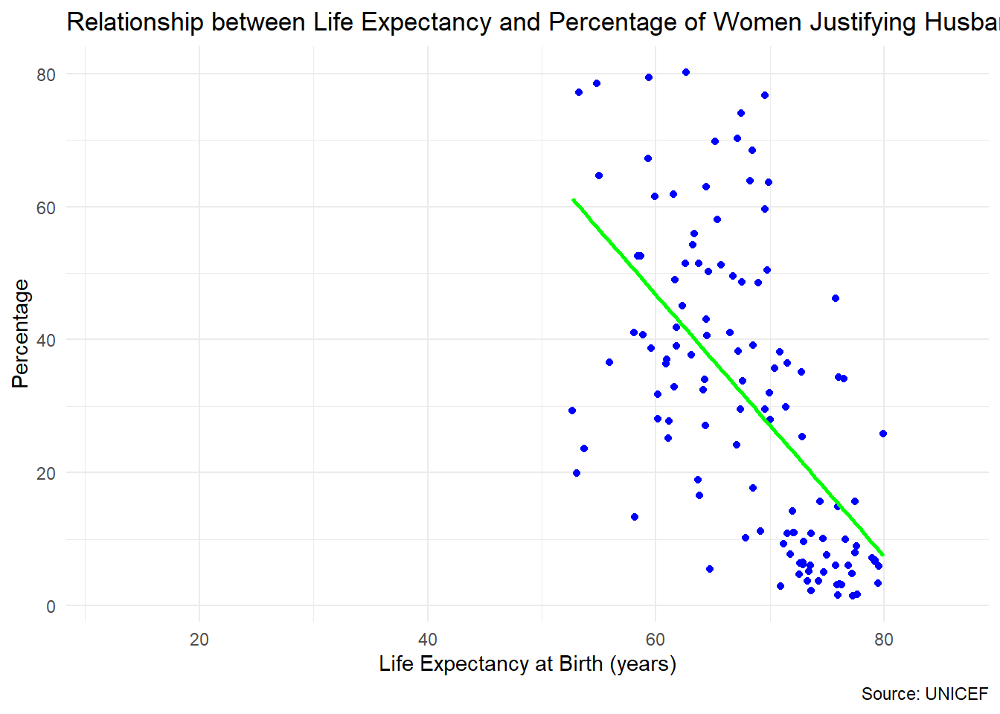
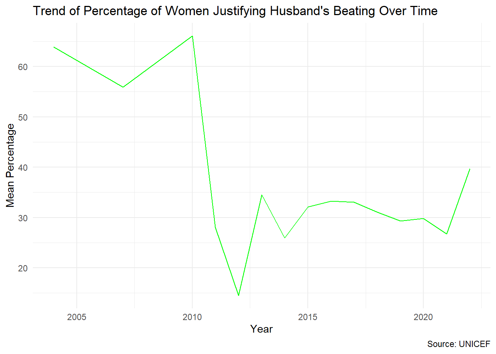

World Issue Report: Women’s Rights and Gender Equality
Author
Nithishkumar Sridharan
Introduction
In today’s, interconnected world, there’s a growing urgency to understand and tackle global challenges head-on. As a Data Analytic project of UNICEF, This study concentrates on one of the most pressing issues: the widespread point of view towards domestic violence against women.
Domestic violence against women is a bitter reality, affecting millions worldwide. According to the ‘World Health Organization (WHO)’, almost 1 in 3 women globally have experienced physical or sexual violence from an intimate partner in their lifetime. These statistics highlight the urgent need to understand and address the concerns surrounding this issue.
About the Dataset, The analysis data comprises two files: “unicef_indicator_1” and “unicef_metadata,” each providing valuable insights into different aspects related to domestic violence as well as socio-economic indicators.
The “unicef_indicator_1” contains data on records related to domestic violence, including columns such as country, alpha codes, numeric codes, and the percentage of respondents justifying their husband’s beating, denoted by the “obs_value” column. Additional details include information on the period of data collection, the sex of respondents, and other relevant metadata.
On the other hand, the “unicef_metadata” provides socio-economic information about different countries, including GDP per capita, population size, GNI, inflation rates, life expectancy at birth, and military expenditure as a percentage of GDP. This dataset offers contextual information that can help correlate societal attitudes towards domestic violence with broader economic along demographic factors.
By analyzing these datasets combined, a deeper understanding of the relation between societal attitudes, socio-economic conditions, and domestic violence prevalence can be gained.
Data Visualization and Analysis:
Global Variation in the Percentage of Women Justifying Husband’s Beating by Country
This code snippet below presents a visualization aimed at understanding the global trend towards domestic violence against women. By utilising the ggplot2 library, A choropleth map is created, illustrating the percentage of women who consider a husband’s beating justified in various countries.
Using geographic data gained from the map_data() function, indicator data can be plotted onto a world map. Each country is shaded based on the percentage of women justifying their husband’s beating, ranging from yellow indicating low level to red indicating high levels of acceptance. This visualization offers insight into a crucial societal issue.
library(ggplot2)library(dplyr)
Attaching package: 'dplyr'
The following objects are masked from 'package:stats':
filter, lag
The following objects are masked from 'package:base':
intersect, setdiff, setequal, union
unicef_metadata <-read.csv("unicef_metadata.csv")unicef_indicator_1 <-read.csv("unicef_indicator_1.csv")# percentage of women who consider a husband's beating justified by country.map_world <-map_data("world")map_data_join <-full_join(unicef_indicator_1, map_world, by =c("country"="region"))ggplot(map_data_join) +aes(x = long, y = lat, group = group, fill = obs_value) +geom_polygon() +scale_fill_gradient(low ="yellow", high ="red") +labs(title ="Map of Percentage of Women Justifying Husband's Beating by Country",fill ="Percentage",caption ="Source: UNICEF") +theme_minimal()

The colour-coded world map illustrates the global landscape of attitudes towards domestic violence against women. Countries such as Afghanistan, Mali, South Sudan, Chad, and the Solomon Islands have notably high percentages of women justifying their husband’s beating. This trend highlights the urgent necessity for targeted interventions and support systems to challenge societal norms and promote gender equality.
On the other hand, nations including Uruguay, Serbia, Cuba, the Dominican Republic, and Ukraine exhibit lower percentages of acceptance towards domestic violence. While this is a positive indication, it indicates the ongoing culture to cultivate cultures of respect and non-violence, ensuring that every woman can live free from discrimination and fear.
Top 20 Countries with Highest Acceptance of Domestic Violence
This code segment below indicates the examination of attitudes towards domestic violence against women across different countries. By identifying the top 20 countries with the highest percentage of women justifying their husband’s beating, the visualization offers a focused perspective on this concerning societal concern.
Using a bar chart representation, each country’s percentage is indicated, with the chart organized in decreasing order of the percentage values. T
top_countries <- unicef_indicator_1 %>%arrange(desc(obs_value)) %>%head(20)bar_chart <-ggplot(top_countries, aes(x =reorder(country, obs_value), y = obs_value)) +geom_bar(stat ="identity", fill ="skyblue") +coord_flip() +labs(title ="Top 20 Countries with Highest Percentage of Women Justifying Husband's Beating",x ="Country",y ="Percentage",caption ="Source: UNICEF") +theme_minimal()print(bar_chart)

20 Countries with Lowest Acceptance of Domestic Violence
This visualization indicated the top 20 countries with the lowest percentage of women justifying their husband’s beating, showing the societal attitudes towards domestic violence. By sorting the data in ascending order of acceptance levels, the bar chart offers a unique perspective on countries where such attitudes are comparatively less concerning.
top_countries <- unicef_indicator_1 %>%arrange(obs_value) %>%head(20)bar_chart <-ggplot(top_countries, aes(x =reorder(country, obs_value), y = obs_value)) +geom_bar(stat ="identity", fill ="skyblue") +coord_flip() +labs(title =" 20 Countries with Lowest Percentage of Women Justifying Husband's Beating",x ="Country",y ="Percentage",caption ="Source: UNICEF") +theme_minimal()print(bar_chart)

Life Expectancy vs. Acceptance of Domestic Violence
This scatterplot visualization shown below examines the relationship between life expectancy at birth and the percentage of women justifying their husband’s beating. By combining socio-economic metadata with domestic violance data, the analysis aims to reveals potential correlations between life expectancy and societal attitudes towards domestic violence.
options(warn =-1)merged_data <-merge(unicef_metadata, unicef_indicator_1, by.x =c("country", "year"), by.y =c("country", "time_period"), all =TRUE)scatterplot <-ggplot(merged_data, aes(x =`Life.expectancy.at.birth..total..years.`, y = obs_value)) +geom_point(color ="blue") +geom_smooth(method ="lm", se =FALSE, color ="green") +labs(title ="Relationship between Life Expectancy and Percentage of Women Justifying Husband's Beating",x ="Life Expectancy at Birth (years)",y ="Percentage",caption ="Source: UNICEF") +theme_minimal()print(scatterplot)
`geom_smooth()` using formula = 'y ~ x'

The scatter plot shows the trend which is indicated by the green trend line, which indicates that Life expectancy is comparatively lower where ‘Percentage of Women Justifying Husband’s Beating’ is high. Indicating a healthy life is the result of non-violence.
Understanding Temporal Trends: Evolution of Attitudes Towards Domestic Violence
This time series chart visualizes the trend of the percentage of women justifying their husband’s beating over the period. using aggregated data, the analysis showcases how attitudes towards domestic violence have changed across different years.
The data for the time series plot is obtained by aggregating the observed value data of unicef_indicator_1 over the year from all the countries. The plot shows the mean value of ‘Percentage of Women Justifying Husband’s Beating’ across the period.
This visualization plays an important role in capturing the temporal dynamics of societal attitudes. By tracking changes in the mean percentage over time, the chart provides valuable insights into long-term patterns and trends. Such insights can inform policy-making and advocacy efforts aimed at addressing and reducing the acceptance of domestic violence against women on a global scale.
library(dplyr)# Aggregating the data by calculating the mean percentage for each yeartime_series_data <- unicef_indicator_1 %>%group_by(time_period) %>%summarise(mean_percentage =mean(obs_value, na.rm =TRUE))# Plotting the time series charttime_series <-ggplot(time_series_data, aes(x = time_period, y = mean_percentage)) +geom_line(color ="green") +labs(title ="Trend of Percentage of Women Justifying Husband's Beating Over Time",x ="Year",y ="Mean Percentage",caption ="Source: UNICEF") +theme_minimal()print(time_series)

The time series plot indicates that around 2010 there were a high number of cases registered concerning domestic violence and around 2012 is the year recorded with low domestic violence. However, there is a gradual increase in the number of cases after 2012. Indicating the need to address the issue for the betterment of women and society.